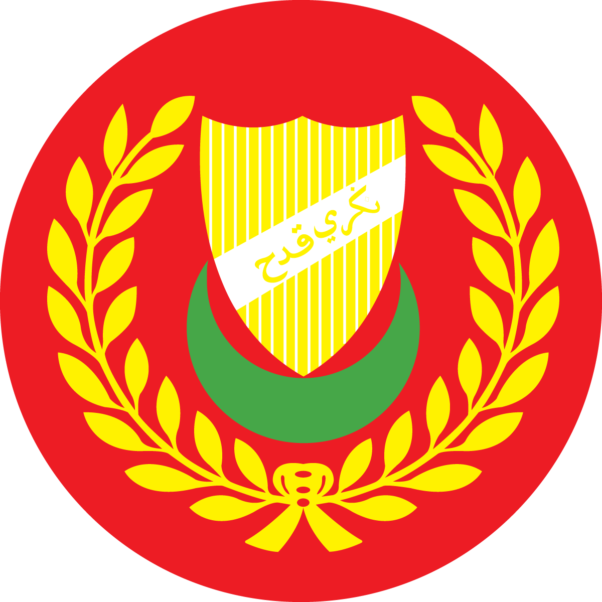

Utama
Tentang Kami
Sejarah
Maklum Balas Pelawat
Menarik di Muzium
Aras 1: Galeri Peralatan Pertanian
Aras 2: Galeri-galeri
Aras 3: Mural Gunung Keriang
Perkhidmatan Atas Talian
Permohonan Lawatan Berpandu
E-Aduan
Maklum Balas Pelawat / Visitor Feedback
موزيوم ڤادي
Loading…